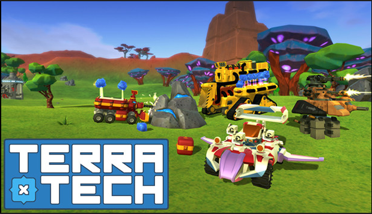
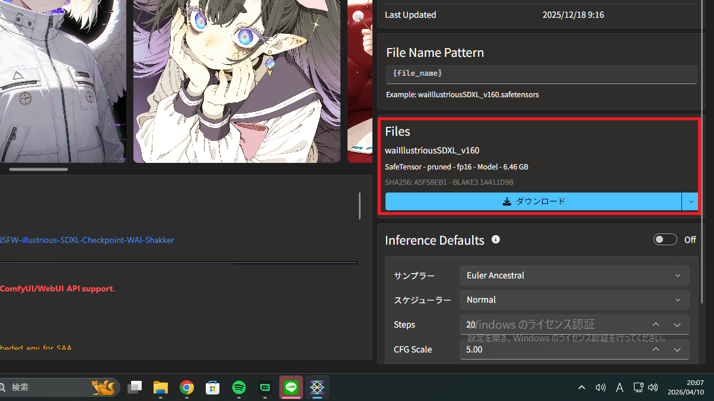
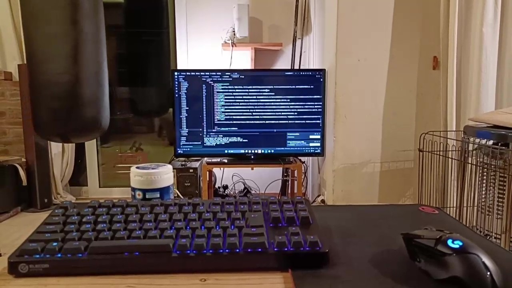

このブログでは、PC関連のことや周辺機器のことについて発信しています。
いろいろな検証やゲームレビューなども行っています。
下に行くと記事がありますので、是非ともご覧ください。

初めてのブログ投稿です！ サンドボックスでサバイバル要素も冒険要素も含まれてるいいゲームなのでレビューします！ちょっとやばいバグも..?2026/3/25
© Payload Studios (TerraTech)
完全サンドボックスの物理ゲーのBeamNGをレビュー! ドリフトだってドライブだってなんでも！でもめっちゃ重いです。2026/3/28
この記事には車両の破壊描写が含まれます。苦手な方は閲覧を控えてください。
これはゲーム内のシミュレーションであり、現実の事故や車両の挙動を完全に保証するものではありません。
© BeamNG GmbH (BeamNG.drive)

物理ゲーのBeamNGのmodを導入する方法を紹介します。僕は初めてmod入れるとき1時間かかりました...2026/3/29
© BeamNG GmbH (BeamNG.drive)
僕が使っていた防水スマホはIPX8(1mで30分沈めても壊れない)なのに壊れた理由を調べて紹介！おすすめの防水アイテムも紹介！2026/4/6
VRAM8GBのグラボでAI画像生成を始めたんですが、VRAM8GBは厳しかったです。(普通に出来はする)VRAM8GBでも効率あげる方法を紹介しているのでぜひご覧ください。2026/4/8

今回は前回の記事の続きであるStable Diffusion/Forgeのちょっとした高速化設定とStability Matrixを使った導入方法を紹介します。2026/4/10
今回は前回の記事の続きであるStable Diffusion/Forgeの高速化設定と高画質化設定を紹介します。僕の場合は3秒も早くなったのでぜひご覧ください。おもろいAIの失敗もありました。2026/4/12

今回は前回の記事の続きであるStable Diffusion/Forgeの高速化設定と高画質化設定を紹介します。僕の場合は3秒も早くなったのでぜひご覧ください。おもろいAIの失敗もありました。2026/4/12